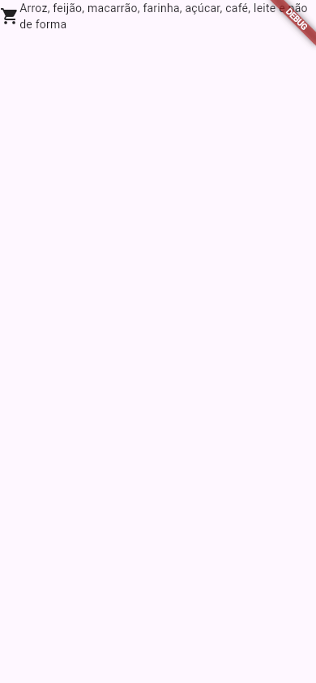
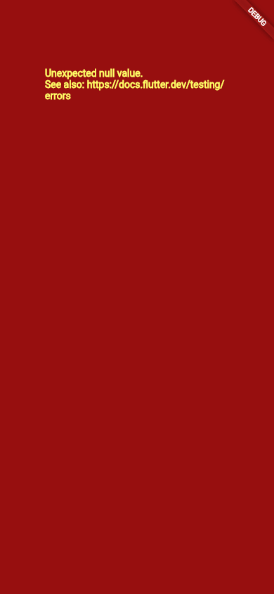

Flutter Erros Comuns e Como Ler
Todo mundo que faz app em Flutter vê, toda semana, blocos enormes de texto em inglês no console, listras amarelas e pretas na tela e, de vez em quando, a famosa tela vermelha. Parece assustador, mas as mensagens do Flutter estão entre as mais caprichadas que existem: quase sempre dizem o que aconteceu, em que linha e como consertar. Esta aula ensina a ler esses blocos e passa pelos sete erros que mais aparecem para quem está começando.
- As duas famílias de erro: os de compilação (o app nem abre) e os de execução (o app abre e algo dá errado).
- A anatomia de um bloco
EXCEPTION CAUGHT BY …: onde está a frase importante e onde está a sua linha. - Os erros de layout: o estouro (
RenderFlex overflowed), a lista sem altura (unbounded height) e oExpandedfora do lugar. - O valor nulo (
Null check operator…) e a tela vermelha. - O
No Material widget found. - Dois erros de compilação clássicos:
setStatenumStatelessWidgete a vírgula esquecida.
Todas as mensagens desta página vieram do Flutter 3.47.7 da máquina da Ana. Ela montou cada tela num projeto chamado erros e abriu o app dentro de um teste (flutter test, da aula Testes de Widget), que imprime no terminal as mesmas mensagens que o flutter run mostra no console. As fotos foram tiradas com o app rodando num navegador. Nos blocos longos, as partes repetitivas da pilha foram cortadas e marcadas com «…».
A ideia: o bilhete do mecânico
Você deixa o carro na oficina e recebe um bilhete: "Peça: pastilha de freio dianteira esquerda. Problema: gasta. Causa provável: uso intenso. Solução: trocar a pastilha." O bilhete tem um título, o problema, o lugar e a sugestão. Os blocos de erro do Flutter são esse bilhete, só que em inglês e com muito mais detalhes técnicos no meio. O truque é saber pular os detalhes e ir direto às quatro partes.
1. As duas famílias de erro
| Erro de compilação | Erro de execução | |
|---|---|---|
| Quando | Antes de o app abrir | Com o app aberto |
| Cara | lib/main.dart:14:11: Error: … e um ^^^^ embaixo do lugar | Um bloco ══╡ EXCEPTION CAUGHT BY … ╞══ |
| Na tela | Nada (o app nem roda) | Listras amarelas e pretas, tela vermelha ou um pedaço que some |
| Quem avisa antes | O editor sublinha em vermelho e o flutter analyze lista | Ninguém: só aparece rodando |
2. O estouro: A RenderFlex overflowed
O erro mais famoso do Flutter. A Ana pôs um ícone e uma lista de compras comprida numa Row:
import 'package:flutter/material.dart';
void main() => runApp(const MaterialApp(home: Telinha()));
class Telinha extends StatelessWidget {
const Telinha({super.key});
@override
Widget build(BuildContext context) {
return const Scaffold(
body: Row(
children: [
Icon(Icons.shopping_cart),
Text('Arroz, feijão, macarrão, farinha, açúcar, café, leite e pão de forma'),
],
),
);
}
}
E no console:
══╡ EXCEPTION CAUGHT BY RENDERING LIBRARY ╞═════════════════════════════════════════════════════════
The following assertion was thrown during layout:
A RenderFlex overflowed by 193 pixels on the right.
The relevant error-causing widget was:
Row Row:file:///home/ana/erros/lib/main.dart:11:13
The overflowing RenderFlex has an orientation of Axis.horizontal.
The edge of the RenderFlex that is overflowing has been marked in the rendering with a yellow and
black striped pattern. This is usually caused by the contents being too big for the RenderFlex.
Consider applying a flex factor (e.g. using an Expanded widget) to force the children of the
RenderFlex to fit within the available space instead of being sized to their natural size.
This is considered an error condition because it indicates that there is content that cannot be
seen. If the content is legitimately bigger than the available space, consider clipping it with a
ClipRect widget before putting it in the flex, or using a scrollable container rather than a Flex,
like a ListView.
The specific RenderFlex in question is: RenderFlex#d0de3 relayoutBoundary=up1 OVERFLOWING:
creator: Row ← KeyedSubtree-[GlobalKey#b1bda] ← _BodyBuilder ← MediaQuery ←
LayoutId-[<_ScaffoldSlot.body>] ← CustomMultiChildLayout ← _ActionsScope ← Actions ← Builder ←
DefaultTextStyle ← AnimatedDefaultTextStyle ← _InkFeatures-[GlobalKey#b4dca ink renderer] ← ⋯
parentData: offset=Offset(0.0, 0.0); id=_ScaffoldSlot.body (can use size)
constraints: BoxConstraints(0.0<=w<=800.0, 0.0<=h<=600.0)
size: Size(800.0, 24.0)
direction: horizontal
«…»
◢◤◢◤◢◤◢◤◢◤◢◤◢◤◢◤◢◤◢◤◢◤◢◤◢◤◢◤◢◤◢◤◢◤◢◤◢◤◢◤◢◤◢◤◢◤◢◤◢◤◢◤◢◤◢◤◢◤◢◤◢◤◢◤◢◤◢◤◢◤◢◤◢◤◢◤◢◤◢◤◢◤◢◤◢◤◢◤◢◤◢◤◢◤◢◤◢◤◢◤
════════════════════════════════════════════════════════════════════════════════════════════════════
Como ler um bloco de erro (vale para todos)
- ══╡ EXCEPTION CAUGHT BY RENDERING LIBRARY ╞══
- O título: "exceção capturada pela biblioteca de desenho". Diz quem pegou o erro.
RENDERING= na hora de medir e posicionar (layout);WIDGETS= na hora de montar os widgets (obuild). - The following assertion was thrown during layout:
- "A seguinte verificação falhou durante o layout." Uma assertion é uma checagem que o Flutter faz em modo debug.
- A RenderFlex overflowed by 193 pixels on the right.
- O problema, a frase mais importante: "um RenderFlex estourou 193 pixels à direita".
RenderFlexé a peça que desenhaRoweColumn. - The relevant error-causing widget was: Row … main.dart:11:13
- O lugar: o widget culpado é a
Rowda linha 11, coluna 13 domain.dart. Na maioria dos editores, dá para clicar e pular para lá. - Consider applying a flex factor (e.g. using an Expanded widget)…
- A sugestão: "considere usar um fator flex, por exemplo um
Expanded, para forçar os filhos a caber no espaço disponível". E, se o conteúdo for mesmo maior que a tela, "recorte comClipRectou use algo que role, como umaListView". - The specific RenderFlex in question is: … constraints … size …
- Os detalhes técnicos: a cadeia de quem criou quem (
creator), as restrições recebidas (até 800 de largura) e o tamanho final. Útil em casos difíceis; no começo, pode pular.
Por que 193 pixels, se na foto o estouro parece menor? O número depende da largura da tela e da fonte. O teste usa uma tela de 800 pixels e uma fonte de teste própria; a foto, um celular de 390 pixels com a fonte Roboto. Lá, o console do navegador disse A RenderFlex overflowed by 52 pixels on the right. O erro é o mesmo.
Como consertar: o texto precisa saber que pode ocupar só o que sobrou da linha. Embrulhe-o num Expanded (veja Expanded e Overflow): ele quebra em várias linhas.
Missão: acabe com as listras. Embrulhe o Text num Expanded(child: …) e rode de novo.
import 'package:flutter/material.dart';
void main() => runApp(const MaterialApp(home: Telinha()));
class Telinha extends StatelessWidget {
const Telinha({super.key});
@override
Widget build(BuildContext context) {
return const Scaffold(
body: Row(
children: [
Icon(Icons.shopping_cart),
Text('Arroz, feijão, macarrão, farinha, açúcar, café, leite e pão de forma'),
],
),
);
}
}
import 'package:flutter/material.dart';
void main() => runApp(const MaterialApp(home: Telinha()));
class Telinha extends StatelessWidget {
const Telinha({super.key});
@override
Widget build(BuildContext context) {
return const Scaffold(
body: Row(
children: [
Icon(Icons.shopping_cart),
Expanded(child: Text('Arroz, feijão, macarrão, farinha, açúcar, café, leite e pão de forma')),
],
),
);
}
}

Expanded, o texto ganha a largura que sobrou ao lado do ícone e quebra em duas linhas. Sem listras, sem erro no console.3. A lista sem altura: Vertical viewport was given unbounded height
A Ana pôs um título e uma ListView dentro de uma Column:
import 'package:flutter/material.dart';
void main() => runApp(const MaterialApp(home: Telinha()));
class Telinha extends StatelessWidget {
const Telinha({super.key});
@override
Widget build(BuildContext context) {
return Scaffold(
body: Column(
children: [
const Text('Compras da Ana'),
ListView(
children: const [Text('Arroz'), Text('Feijão')],
),
],
),
);
}
}
══╡ EXCEPTION CAUGHT BY RENDERING LIBRARY ╞═════════════════════════════════════════════════════════ The following assertion was thrown during performResize(): Vertical viewport was given unbounded height. Viewports expand in the scrolling direction to fill their container. In this case, a vertical viewport was given an unlimited amount of vertical space in which to expand. This situation typically happens when a scrollable widget is nested inside another scrollable widget. If this widget is always nested in a scrollable widget there is no need to use a viewport because there will always be enough vertical space for the children. In this case, consider using a Column or Wrap instead. Otherwise, consider using a CustomScrollView to concatenate arbitrary slivers into a single scrollable. The relevant error-causing widget was: ListView ListView:file:///home/ana/erros/lib/main.dart:14:11 When the exception was thrown, this was the stack: #0 debugCheckHasBoundedAxis.<anonymous closure> (package:flutter/src/rendering/debug.dart:367:13) #1 debugCheckHasBoundedAxis (package:flutter/src/rendering/debug.dart:426:4) #2 RenderViewport.computeDryLayout (package:flutter/src/rendering/viewport.dart:1681:12) «…mais de 100 linhas de pilha…» ══╡ EXCEPTION CAUGHT BY RENDERING LIBRARY ╞═════════════════════════════════════════════════════════ The following assertion was thrown during performLayout(): RenderBox was not laid out: RenderViewport#4d730 NEEDS-LAYOUT NEEDS-PAINT NEEDS-COMPOSITING-BITS-UPDATE «…e o mesmo "RenderBox was not laid out" mais umas dez vezes…»
"Uma área de rolagem vertical recebeu altura sem limite." A ListView quer ocupar toda a altura disponível; a Column diz aos filhos "use quanta altura quiser". Resultado: a lista tentaria ter altura infinita. Repare que este erro vem com uma cascata: depois do primeiro bloco, vêm vários RenderBox was not laid out ("a caixa não foi medida"), que são só consequência do primeiro. Leia sempre o primeiro bloco; os seguintes costumam se resolver sozinhos.
Como consertar: diga à lista quanto espaço ela tem: Expanded(child: ListView(…)) (o resto da tela) ou SizedBox(height: 200, child: ListView(…)) (uma altura fixa). Mais em ListView.
4. O valor nulo e a tela vermelha
O nome salvo da pessoa ainda não existe (é null), mas o código usou o !, que diz ao Dart "confie em mim, não é nulo":
import 'package:flutter/material.dart';
void main() => runApp(const MaterialApp(home: Telinha()));
class Telinha extends StatelessWidget {
const Telinha({super.key});
String? get nomeSalvo => null;
@override
Widget build(BuildContext context) {
return Scaffold(
body: Text('Olá, ${nomeSalvo!}'),
);
}
}
══╡ EXCEPTION CAUGHT BY WIDGETS LIBRARY ╞═══════════════════════════════════════════════════════════ The following _TypeError was thrown building Telinha(dirty): Null check operator used on a null value The relevant error-causing widget was: Telinha Telinha:file:///home/ana/erros/lib/main.dart:3:47 When the exception was thrown, this was the stack: #0 Telinha.build (package:erros/main.dart:13:35) #1 StatelessElement.build (package:flutter/src/widgets/framework.dart:5902:49) #2 ComponentElement.performRebuild (package:flutter/src/widgets/framework.dart:5830:15) «…»
- EXCEPTION CAUGHT BY WIDGETS LIBRARY
- Agora foi a biblioteca de widgets: o erro aconteceu durante um
build. - The following _TypeError was thrown building Telinha(dirty):
- "Um erro de tipo aconteceu ao montar a
Telinha." (dirty, "suja", quer dizer que ela estava marcada para ser redesenhada.) - Null check operator used on a null value
- "O operador de checagem de nulo (
!) foi usado num valor nulo." - The relevant error-causing widget was: Telinha … main.dart:3:47
- Aponta onde a
Telinhafoi criada (nomain, linha 3). Útil, mas não é a linha do defeito. - #0 Telinha.build (package:erros/main.dart:13:35)
- A pilha. A linha
#0é onde o erro estourou: linha 13, coluna 35, exatamente o!. Procure sempre a primeira linha da pilha com um arquivo seu.

build de um widget falha, o Flutter desenha este aviso no lugar dele (só em modo debug).Repare: no navegador, a mesma falha aparece como Unexpected null value. ("valor nulo inesperado"), porque lá o Dart roda compilado para JavaScript e usa outra frase. No celular e no teste, é Null check operator used on a null value. São o mesmo erro. Em modo release, no lugar da tela vermelha fica uma área cinza, sem texto.
Como consertar: não use ! quando o valor pode mesmo ser nulo. Dê um valor padrão com ??: Text('Olá, ${nomeSalvo ?? 'visitante'}').
5. Expanded no lugar errado: Incorrect use of ParentDataWidget
import 'package:flutter/material.dart';
void main() => runApp(const MaterialApp(home: Telinha()));
class Telinha extends StatelessWidget {
const Telinha({super.key});
@override
Widget build(BuildContext context) {
return const Scaffold(
body: Center(
child: Expanded(child: Text('Compras da Ana')),
),
);
}
}
══╡ EXCEPTION CAUGHT BY WIDGETS LIBRARY ╞═══════════════════════════════════════════════════════════ The following assertion was thrown while applying parent data.: Incorrect use of ParentDataWidget. The ParentDataWidget Expanded(flex: 1) wants to apply ParentData of type FlexParentData to a RenderObject, which has been set up to accept ParentData of incompatible type BoxParentData. Usually, this means that the Expanded widget has the wrong ancestor RenderObjectWidget. Typically, Expanded widgets are placed directly inside Flex widgets. The offending Expanded is currently placed inside a Center widget. The ownership chain for the RenderObject that received the incompatible parent data was: RichText ← Text ← Expanded ← Center ← KeyedSubtree-[GlobalKey#b7896] ← _BodyBuilder ← MediaQuery ← LayoutId-[<_ScaffoldSlot.body>] ← CustomMultiChildLayout ← _ActionsScope ← ⋯ «…»
"Uso incorreto de ParentDataWidget." A frase que resolve está no meio: "Expanded widgets are placed directly inside Flex widgets. The offending Expanded is currently placed inside a Center widget." ("O Expanded vai diretamente dentro de um Flex [Row, Column]. O Expanded culpado está dentro de um Center.") A cadeia Text ← Expanded ← Center mostra o caminho, de dentro para fora. Como consertar: use Expanded (e Flexible) só como filho direto de Row, Column ou Flex. Aqui, ele nem é necessário: apague-o.
6. No Material widget found
A Ana esqueceu o Scaffold e pôs um TextField direto na tela:
import 'package:flutter/material.dart';
void main() => runApp(const MaterialApp(home: Telinha()));
class Telinha extends StatelessWidget {
const Telinha({super.key});
@override
Widget build(BuildContext context) {
return const Center(
child: TextField(
decoration: InputDecoration(labelText: 'Novo item'),
),
);
}
}
══╡ EXCEPTION CAUGHT BY WIDGETS LIBRARY ╞═══════════════════════════════════════════════════════════ The following assertion was thrown building TextField(decoration: InputDecoration(labelText: "Novo item"), dirty, dependencies: [MediaQuery, UnmanagedRestorationScope], state: _TextFieldState#8436b): No Material widget found. TextField widgets require a Material widget ancestor within the closest LookupBoundary. In Material Design, most widgets are conceptually "printed" on a sheet of material. In Flutter's material library, that material is represented by the Material widget. It is the Material widget that renders ink splashes, for instance. Because of this, many material library widgets require that there be a Material widget in the tree above them. To introduce a Material widget, you can either directly include one, or use a widget that contains Material itself, such as a Card, Dialog, Drawer, or Scaffold. The specific widget that could not find a Material ancestor was: TextField The ancestors of this widget were: ... Center Telinha Semantics Builder RepaintBoundary-[GlobalKey#92ddc] ... The relevant error-causing widget was: TextField TextField:file:///home/ana/erros/lib/main.dart:11:14 «…»
"Nenhum widget Material encontrado. TextField precisa de um Material acima dele." A explicação é bonita: no Material Design, os widgets são "impressos" numa folha de material, e é essa folha que desenha, por exemplo, o respingo do toque. Como consertar (a própria mensagem diz): ponha um widget que já tem Material dentro, como Scaffold, Card, Dialog ou Drawer. Quase sempre, o que faltou foi o Scaffold (veja Scaffold).
7. Erros de compilação
Estes nem deixam o app abrir. O formato é sempre arquivo:linha:coluna: Error: mensagem, seguido da linha do código e de ^^^^ embaixo do lugar exato.
setState num StatelessWidget
import 'package:flutter/material.dart';
void main() => runApp(const MaterialApp(home: Telinha()));
class Telinha extends StatelessWidget {
const Telinha({super.key});
@override
Widget build(BuildContext context) {
int cliques = 0;
return Scaffold(
body: TextButton(
onPressed: () {
setState(() => cliques++);
},
child: Text('Cliques: $cliques'),
),
);
}
}
lib/main.dart:14:11: Error: The method 'setState' isn't defined for the type 'Telinha'.
- 'Telinha' is from 'package:erros/main.dart' ('lib/main.dart').
Try correcting the name to the name of an existing method, or defining a method named 'setState'.
setState(() => cliques++);
^^^^^^^^
"O método setState não está definido para o tipo Telinha." O setState só existe dentro do State de um StatefulWidget. A sugestão do compilador ("corrija o nome ou crie um método setState") aqui não ajuda: o conserto certo é transformar a Telinha num StatefulWidget e levar o cliques para um campo do State (veja StatefulWidget e setState). Um int cliques = 0 dentro do build voltaria a zero a cada redesenho.
A vírgula esquecida
import 'package:flutter/material.dart';
void main() => runApp(const MaterialApp(home: Telinha()));
class Telinha extends StatelessWidget {
const Telinha({super.key});
@override
Widget build(BuildContext context) {
return const Scaffold(
body: Text('Compras da Ana')
floatingActionButton: FloatingActionButton(onPressed: null, child: Icon(Icons.add)),
);
}
}
lib/main.dart:12:7: Error: Expected ',' before this.
floatingActionButton: FloatingActionButton(onPressed: null, child: Icon(Icons.add)),
^^^^^^^^^^^^^^^^^^^^
"Era esperada uma , antes disto." O compilador aponta a linha 12, mas a vírgula faltou no fim da linha 11, depois de Text('Compras da Ana'): ele só percebe a falta quando encontra a palavra seguinte. Regra: quando o erro de sintaxe não faz sentido na linha apontada, olhe a linha de cima. Dica: deixe sempre uma vírgula depois do último parâmetro também; o formatador do Dart (dart format) arruma o código melhor assim.
8. Roteiro para qualquer erro
- Ache o primeiro bloco. Role o console para cima até o primeiro
EXCEPTION CAUGHTou o primeiroError:. Os seguintes costumam ser consequência. - Leia a frase do problema (a linha logo depois de
The following … was thrown). - Ache a sua linha:
The relevant error-causing widget wasou a primeira linha da pilha commain.dart(ou outro arquivo seu). - Leia a sugestão: as frases com Consider…, Try…, Typically….
- Ainda perdido? Copie a frase do problema (sem os números
#d0de3, que mudam a cada vez) e procure na internet: alguém já passou por isso.
Referência
| Mensagem | Em português | Conserto mais comum |
|---|---|---|
A RenderFlex overflowed by N pixels | A Row/Column estourou | Expanded/Flexible no filho grande, ou rolagem |
Vertical viewport was given unbounded height | Lista sem limite de altura | Expanded ou SizedBox em volta da ListView |
RenderBox was not laid out | Caixa não medida (consequência) | Resolva o primeiro erro do console |
Null check operator used on a null value / Unexpected null value | ! num valor nulo | ?? com valor padrão, ou testar antes |
Incorrect use of ParentDataWidget | Expanded/Flexible/Positioned no pai errado | Use-o só dentro de Row/Column (Positioned: Stack) |
No Material widget found | Falta o Material acima | Ponha um Scaffold |
The method 'setState' isn't defined | setState fora de um State | Troque para StatefulWidget |
Expected ',' before this. | Faltou vírgula | Olhe o fim da linha de cima |
A lista completa, para consulta, está em Referência de Erros.
Exercícios
1. Em que linha?
O console mostrou lib/main.dart:27:9: Error: Expected ';' after this.. Em que linha o compilador apontou o erro?
2. O conserto do nulo
Complete para mostrar "visitante" quando o nome for nulo:
3. O console mostra um Vertical viewport was given unbounded height e, depois, dez blocos de RenderBox was not laid out. Por onde começar?
4. As listras amarelas e pretas com "RIGHT OVERFLOWED" indicam o quê?
5. No Material widget found ao usar um TextField. Qual o conserto mais comum?
6. Expected ',' before this. apontando a linha 12. Onde, provavelmente, falta a vírgula?
Resumo
- Erro de compilação:
arquivo:linha:coluna: Error:+^^^^; o app nem abre. Erro de execução: blocoEXCEPTION CAUGHT BY …com o app aberto. - Num bloco, leia: a frase do problema, o
relevant error-causing widget(ou a primeira linha da pilha com arquivo seu) e as sugestões (Consider…). - Sempre o primeiro erro primeiro: os outros costumam ser cascata.
- Os clássicos: estouro (
Expanded), lista sem altura (Expanded/SizedBox),!em nulo (??),Expandedfora deRow/Column, falta deScaffold,setStateemStatelessWidget, vírgula esquecida (olhe a linha de cima). - Tela vermelha e listras só aparecem em debug; em release, área cinza.